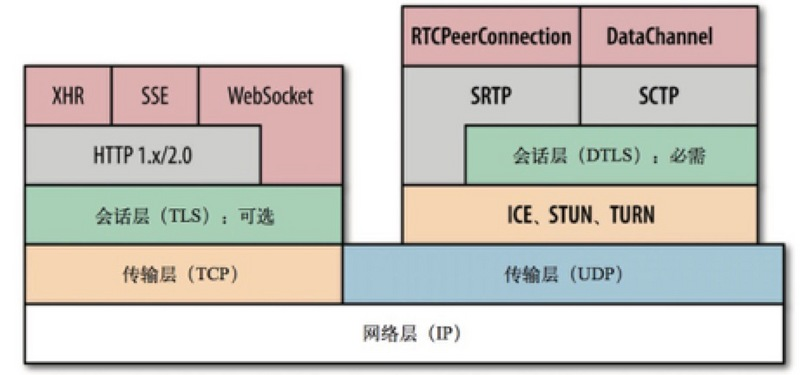
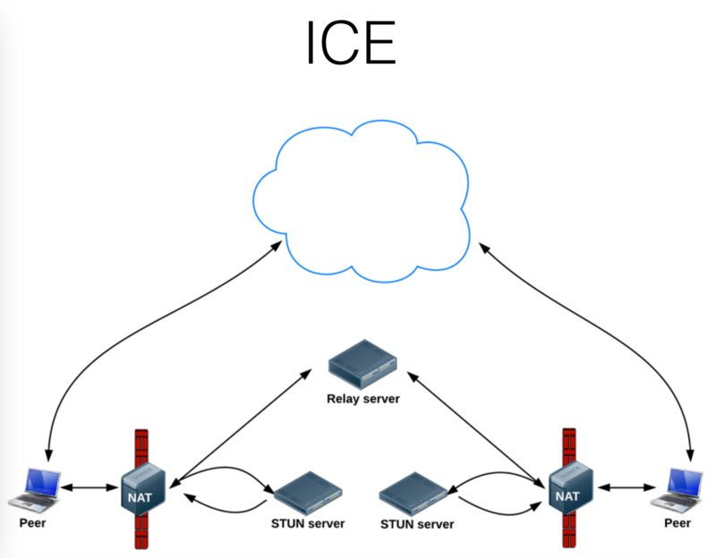
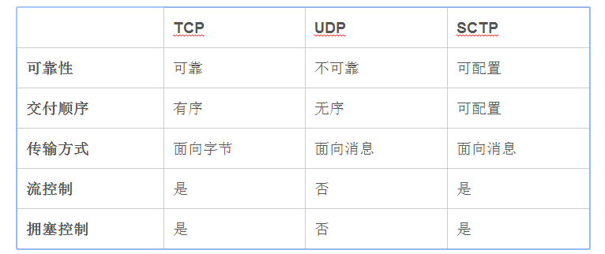

谷歌2010年以6820万美元收购Global IP Solutions公司而获得的一项技术,2011年开源。 WebRTC提供了视频会议的核心技术，包括音视频的采集、编解码（压缩）、网络传输（延迟丢包，多路复用，拥塞，流量控制）、显示（抖动，去噪，回声消除，影响增强,声音和画面同步）...， 并且还支持跨平台：windows，linux，mac，android
WebRTC实现了三个API，分别是:
MediaStream
通过MediaStream的API能够通过设备的摄像头及话筒获得视频、音频的同步流
RTCPeerConnection
RTCPeerConnection是WebRTC用于构建点对点之间稳定、高效的流传输的组件
NAT（Network Address Translation，网络地址转换
STUN（Session Traversal Utilities for NAT，NAT会话穿越应用程序）是一种网络协议，它允许位于NAT（或多重NAT）后的客户端找出自己的公网地址，
查出自己位于哪种类型的NAT之后以及NAT为某一个本地端口所绑定的Internet端端口。
这些信息被用来在两个同时处于NAT路由器之后的主机之间创建UDP通信。
TURN（全名Traversal Using Relay NAT, NAT中继穿透），是一种资料传输协议（data-transfer protocol）。允许在TCP或UDP的连线上跨越NAT或防火墙
目前常用的针对UDP的NAT 穿透（NAT Traversal）方法主要有：STUN、TURN、ICE、uPnP等。其中ICE方式由于其结合了STUN和TURN的特点，所以使用最为广泛
ICE，全名叫交互式连接建立（Interactive Connectivity Establishment）,
一种综合性的NAT穿越技术，它是一种框架，可以整合各种NAT穿越技术如STUN、TURN（Traversal Using Relay NAT 中继NAT实现的穿透）。
ICE会先使用STUN，尝试建立一个基于UDP的连接，如果失败了，就会去TCP（先尝试HTTP，然后尝试HTTPS），如果依旧失败ICE就会使用一个中继的TURN服务器
WebRTC使用SDP（Session Description Protocol，会话描述协议）描述端到端连接的参数。
SDP用于描述"会话状况"，表现为一系列的连接属性：要交换的媒体类型（音频、视频及应用数据）、网络传输协议、使用的编解码器及其设置、带宽及其他元数据
RTCDataChannel：RTCDataChannel使得浏览器之间（点对点）建立一个高吞吐量、低延时的信道，用于传输任意数据
在WebRTC所有的组件中，都会强制进行加密。在RTCDataChannel中，所有的数据都使用数据报传输层安全性（DTLS）。DTLS是SSL的衍生，也就是说，你的数据将和使用基于SSL的连接一样安全。DTLS已经被标准化，并内置于所有支持WebRTC的浏览器中
RTCDataChannel API 点对点的信道来传递实时的视频、音频数据流
DataChannel是建立在PeerConnection上的，不能单独使用
//pc 为 RTCPeerConnection实例
我们可以使用channel = pc.createDataChannel("someLabel");来在PeerConnection的实例上创建Data Channel，并给与它一个标签
DataChannel使用方式几乎和WebSocket一样，有几个事件：
onopen
onclose
onmessage
onerror
同时它有几个状态，可以通过readyState获取：
connecting: 浏览器之间正在试图建立channel
open：建立成功，可以使用send方法发送数据了
closing：浏览器正在关闭channel
closed：channel已经被关闭了
两个暴露的方法:
close(): 用于关闭channel
send()：用于通过channel向对方发送数据
RTCDataChannel使用Stream Control Transmission Protocol(SCTP)协议，允许我们配置传递语义：我们可以配置包传输的顺序并提供重传时的一些配置


